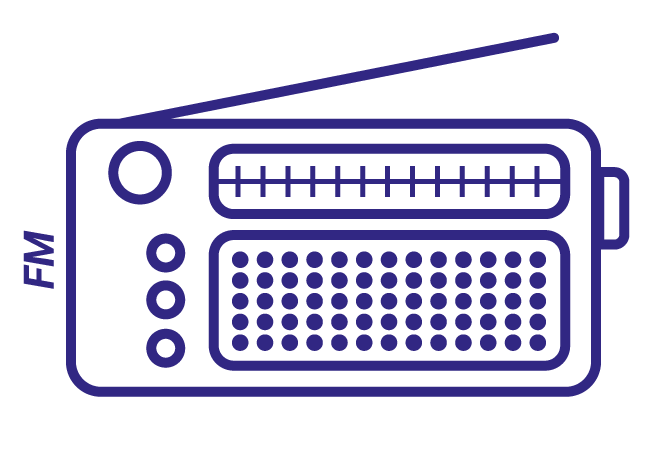
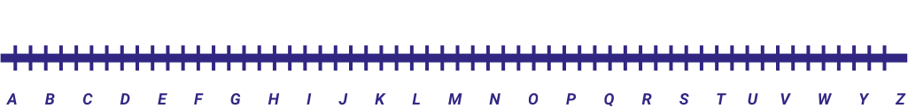
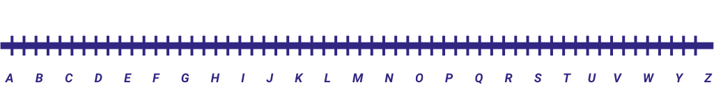

DÉCOUVREZ LA RADIO DU FUTUR...
DÉPLACEZ LE CURSEUR POUR CHANGER LES FRÉQUENCES
ET PASSER À LA RADIO NUMÉRIQUE
Euradio

 


DÉPLOIEMENT DU DAB+ EN EUROPE
COMPARE LES DIFFÉRENTS DEVELOPPEMENTS DU DAB+ EN EUROPE

LA RNT DÉBARQUE DANS VOS RÉGIONS
En retard sur ses voisins européens, la France s’est lancée depuis 2014 dans le DAB+ (radio numérique terrestre) et
se développe progressivement dans les régions françaises. Certaines radios ont décidé de miser sur cette nouvelle
technologie, depuis le départ : Euradio est l’une d’entre elles. Retrouvez sur la carte quelques radios déjà
diffusées
en DAB+ par ville.

Alors, prêts à passer au DAB + ?
CRÉDITS
-

SciencesCom
-

Polytech
-

AGR Nantes
-

Euradio
|  |
|
UN PROJET ISSU DES ATELIERS DU |